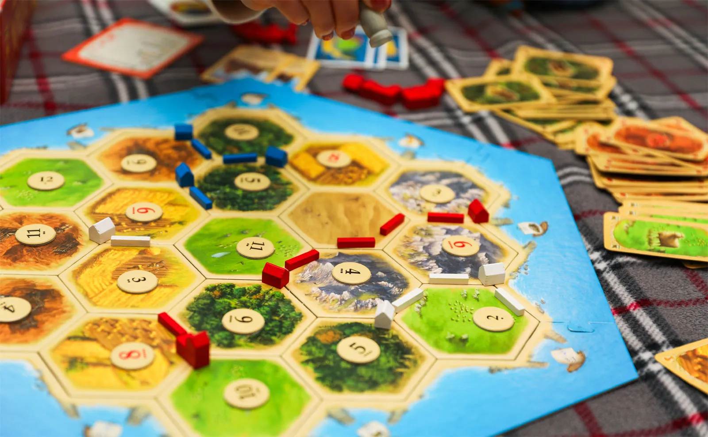
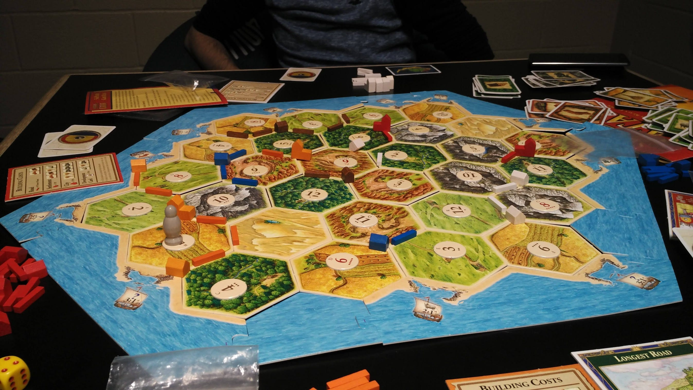

🧩 Set Up
Step-by-step instructions for assembling the island before starting.
1. Assemble the Ocean Frame
Connect the 6 sea frame pieces together around your table. Ensure the harbors face inward toward the island space.
2. Shuffle & Place Terrain Tiles
Shuffle the 19 hex tiles face up and randomly place them inside the sea frame in concentric rings until filled:
- 4 Forest tiles (Lumber)
- 4 Pasture tiles (Wool)
- 4 Field tiles (Grain)
- 3 Hill tiles (Brick)
- 3 Mountain tiles (Ore)
- 1 Desert tile (Produces nothing; starts with the Robber)

Modular hex board constructed inside the sea frame.3. Place the Number Tokens (3 Standard Methods)
A-Z Spiral Rule
Place number tokens letter-side up starting at a corner of the frame. Follow a spiral inwards toward the desert, skipping the Desert tile. Flip tokens over to reveal numbers. This guarantees red numbers (6 & 8) never touch!
Full Random Setup
Shuffle all 18 number tokens face-down and place one on every terrain tile (skip desert). Flip tokens over. Tournament Rule: If red numbers (6 or 8) sit adjacent to each other, swap one red token with a neighboring non-red token.
Balanced Custom Draft
Players adjust token locations to prevent any single intersection from holding unfair production value (e.g. no triple-6/8 intersections or single resource monopolization during placement phase).
⚡ Quick & Easy Rules Guide
Everything you need to know about the game, placements, and actions.
🔄 How a Game of Catan Proceeds
Initial Placement Phase (Snake Draft)
High die roll picks color and goes first:
- First Settlement: Player 1 places 1 settlement + 1 attached road. Order proceeds clockwise (Player 1 → 2 → 3 → 4).
- Second Settlement: Player 4 then places their 2nd settlement + road, and order proceeds counter-clockwise (Player 4 → 3 → 2 → 1).
Starting Resources Yield
You do not collect resources for your first settlement. Each player receives 1 resource card for every hex adjacent to their second settlement only!
Standard Turn Rotation
Turns move clockwise. On your turn, you: 1. Roll dice (produces resources for everyone), 2. Trade with players or bank, and 3. Build roads, settlements, cities, or dev cards.
1. Objective & Point Values
- Be the first player to reach 10 Victory Points (VPs) on your turn.
- Settlement: 1 VP each.
- City: 2 VPs each (upgrades a settlement).
- Longest Road (5+ connected): 2 VPs.
- Largest Army (3+ Knights): 2 VPs.
- VP Dev Cards: 1 VP each (kept hidden).
2. Building Costs Reference
- Road: 1 Lumber + 1 Brick
- Settlement: 1 Lumber + 1 Brick + 1 Wool + 1 Grain
- City: 2 Grain + 3 Ore (Replaces a Settlement)
- Development Card: 1 Wool + 1 Grain + 1 Ore
 Dice rolls drive resource production on every single turn.
Dice rolls drive resource production on every single turn.
3. Settlement Placement Rules
- Distance Rule: A settlement can only be placed at an open intersection if all 3 adjacent intersections are empty (must be at least 2 road lengths apart from any existing settlement).
- Road Network: All new settlements built after setup must connect to your own existing road network.
4. Rolling a 7 & The Robber
- No Resources Produced: Rolling a 7 produces no resources for anyone.
- 7+ Card Penalty: Anyone with 8 or more cards must discard half (rounded down).
- Move Robber & Steal: Active player moves the Robber to any hex & steals 1 random card from a player with an adjacent settlement.
- 🚫 Hex Blockade: While the Robber rests on a hex, no player collects resources from that hex when its number is rolled!
5. Winning the Game
- First Player to 10: Including hidden victory points, the first player to ten wins!
- Largest Army: The first player to play three knight cards, claims Largest Army. A player who suceeds the current amount takes Largest Army.
- Longest Road: The first player to have five placed, consecutive roads claims Longest Road. A player who suceeds the current amount takes Longest Road.
🧠 Professional Catan Strategies
Master these core strategy archetypes used in high-level play.
OWS Strategy (Ore / Wheat / Sheep)
Focus initial placements heavily on high-pip Ore, Grain, and Wool tiles. Skip early road building and quickly upgrade to Cities while buying continuous Development Cards for Army points and hidden VPs.
Road Rush & Port Control
Secure dominant Lumber and Brick numbers early. Lock down crucial expansion spots fast, claim the Longest Road, and settle on 2:1 specialized ports to trade excess wood/brick for Ore and Grain late game.
The Rainbow Setup
Ensure starting settlements give access to all 5 resources. Provides high adaptability to trade board offers and prevents getting bottlenecked by missing a critical resource type.
⚡ Tournament Rules & Pro Meta Tactics
Exploit high-level tricks, unspoken table etiquette, and legal loopholes that pros leverage.

Development card timing and table negotiations separate pros from beginners.Rule: You can play 1 Development Card on your turn before rolling the dice! Pros play Knight cards prior to rolling to move the Robber off their high-pip hex (or onto a leader) before resource generation triggers.
Tactical Combo: Trade away all of a specific resource (e.g. 5 Brick) to opponents in exchange for resources you need. Immediately after trading, play a Monopoly Card naming Brick! You instantly get all your traded cards back plus any extra brick they previously held.
🤝 Non-Block / Non-Steal Deals (Robber Diplomacy)
When rolling a 7 or playing a Knight, propose non-aggression pacts: "If I place the robber on Player B, will you trade me a Wheat next turn?" Or negotiate immunity: "I won't steal from you if you agree not to block my 6 Ore when you roll a 7."
🧮 Hand Counting & 7-Discard Dodge
Track opponent hand counts! If you sit on 7 cards at the end of your turn, buy a Development Card or build a road to stay at 7 or fewer cards, preventing a painful 50% loss if anyone rolls a 7 before your next turn.
🚧 Port Blocking & Cut-offs
Don't just build towards high pips—build roads to physically cap off an opponent's settlement path. Snagging a 2:1 port intersection right before an opponent reaches it severely cripples their trading economy.
📊 Dice Probabilities & Card Distributions
Mathematical odds to help you choose the best hex intersections.
| Dice Roll | Dot Pips | Ways to Roll (out of 36) | Probability % | Strategic Value |
|---|---|---|---|---|
| 2 or 12 | • | 1 / 36 | 2.78% | Minimal - Lowest Probability |
| 3 or 11 | •• | 2 / 36 | 5.56% | Low - Decent 2nd Settlement Placement |
| 4 or 10 | ••• | 3 / 36 | 8.33% | Medium - Good Supporting Resource Value |
| 5 or 9 | •••• | 4 / 36 | 11.11% | High - Excellent Primary Targets |
| 6 or 8 | ••••• | 5 / 36 | 13.89% | Maximum - Best Resource Production |
| 7 | N/A | 6 / 36 | 16.67% | Robber - Average once every 6 rolls! |
Development Card Deck Composition (25 Cards Total)
📺 Complete Video Walkthrough
Watch a visual step-by-step breakdown of how Catan is played.
🌐 Catan Resources & Online Play
Expand your gameplay, practice online against bots, or join competitive leagues.
Official Catan Website
Official rules, expansion guides, FAQ, and tournament news.
Colonist.io (Free Online Catan)
Play web-based multiplayer Catan instantly in your browser.
BoardGameGeek Catan Hub
Community ratings, forum strategies, variants, and expansion reviews.
Catan Universe App
Official cross-platform video game on Steam, iOS, and Android.